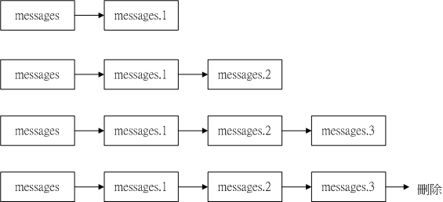

这部分是最容易被新手所忽略的，那就是详细而确实的纪录或者是备份系统的登录文件。什么是登录档呢？简单的说，就是记录系统活动记录的几个档案，例如：何时、何地（来源 IP ）、何人（ login name ）、做了什么动作，另外就是系统在什么时候做了什么样的行为时，发生了什么样的事件等等，要知道的是，我们的 Linux 主机在背景之下，有相当多的 daemons 在工作着，那么这些工作中的程序总是会有一些讯息显示，这些显示的讯息就是给记录在登录文件当中啦，也就是说，记录这些系统的重要讯息，就是登录文件所进行的纪录工作的内容了。而由于这些记录的工作内容对于系统的信息太详细了，若被取得将可能影响到系统的安全性，因此，通常这些登录档只有 root 可以进行视察的功能！
那么为何要记录与解析登录文件呢？这是由于记录文件有几个重要的功能：
- 解决系统的错误：这个对于系统管理员来说是很重要的信息，例如：开机的过程当中侦测到的硬件讯息数据会记录到内存当中，由于这些侦测的信息可以提供我们了解硬件信息，所以如果你的系统发生问题时，可以下达 dmesg 看看硬件的侦测有没有发生错误呢！另外，如果系统资源被耗尽、核心活动发生错误等等事件发生的时候，则系统登录文件亦会将错误的讯息记录在登录文件中（通常是 /var/log/messages ），这些都可以藉以取得错误发生时的信息，并加以克服问题！！
- 解决网络服务的问题：在安装或设定新服务的套件时，最常使用到这个功能了！例如在安装启动 sendmail 时，如果 sendmail 无法提供服务的时候，那么无法提供服务的问题则会被纪录到登录文件当中去，则只要分析登录档就可以了解问题点，并藉以解决问题啦！( 所以我们常说『天助自助者』是真的啦！察看(1)屏幕上面的错误讯息与(2)登录文件的错误信息，几乎可以解决大部分的 Linux 问题！ )
因此，一个有经验的主机管理员，会随时随地查阅一下自己的登录文件，以随时掌握系统的最新脉动！那么见的几个登录档有哪些呢？一般而言，有下面几个：
- 记录登录信息：这个东西相当的重要！例如：有天您的 apache 这个 WWW 服务挂了，你怎么知道何时挂掉的？而最后登入者是谁？！这都可以藉由分析 apache 的登录文件来取得信息；此外，万一有一天您的系统被入侵，并且被利用来攻击他人的主机，这个时候对方的主机查出是您的 Linux 在进行攻击的行为，这个时候你要如何告知对方您的主机是由于被入侵所导致的问题，并且协助对方继续往来源追查呢？！呵呵！此时登录档可是相当重要的呢！
好了，那么记录了这些登录文件之后，我要做什么分析呀！？基本上，一个好的系统管理员大概都知道『一部主机负责的服务最好能少尽量少』，这是什么意思呢？也就是说，这部主机为邮件主机那么就专门负责邮件工作，不要还搞 WWW 服务！这样有几个好处，除了系统的安全性较佳之外（因为开的 port 变少了！），记录文件的解析也会比较简单！因为我们的 /var/log/secure 记录的登入者信息就会比较有一致性！那么我们就可以查询一下每日登入的使用者账号啦与错误讯息啦等等的！（当然��，如果你的频宽够、经验丰富的话，那么一部主机上面安装所有的网络服务也是可以的啦！）基本上，检查/var/log/messages、/var/log/secure这些个档案也就相当够了！因为系统发生的错误或者是警告讯息通常都会写入这个档案中。
- /var/log/secure：记录登入系统存取数据的档案，例如 pop3, ssh, telnet, ftp 等都会记录在此档案中；
- /var/log/wtmp：记录登入者的讯息数据，由于本档案已经被编码过，所以必须使用 last 这个指令来取出档案的内容；
- /var/log/messages：这个档案相当的重要，几乎系统发生的错误讯息（或者是重要的信息）都会记录在这个档案中；
- /var/log/boot.log：记录开机或者是一些服务启动的时候，所显示的启动或关闭讯息；
- /var/log/maillog 或 /var/log/mail/*：纪录邮件存取或往来( sendmail 与 pop3 )的使用者记录；
- /var/log/cron：这个是用来记录 crontab 这个例行性服务的内容的！
- /var/log/httpd, /var/log/news, /var/log/mysqld.log, /var/log/samba, /var/log/procmail.log： 分别是几个不同的网络服务的记录文件啦！
但是，如果我手边有数十部主机怎么办？我要不要一部一部去察看 log file 呢？呵呵！那样察看会死人ㄋㄟ?因此，我们底下也使用一个简易的登录档来分析 Red Hat 或 Mandrake 这两种 Linux distribution 的登录档吧！
| [root @test root]# ps -aux|grep syslog root 782 0.0 0.8 1340 508 ? S Oct30 0:00 syslogd -m 0 root 11044 0.0 1.1 2408 732 pts/1 S 00:03 0:00 grep syslog |
| [root @test root]# vi /var/log/secure Nov 4 16:28:35 test xinetd[7831]: START: telnet pid=7841 from=192.168.1.11 Nov 4 16:28:35 test xinetd[7841]: FAIL: telnet address from=192.168.1.11 Nov 4 23:41:17 test sshd[10803]: Accepted password for test from 192.168.1.11 port 3117 ssh2 Nov 4 23:41:17 test sshd(pam_unix)[10805]: session opened for user test by (uid=500) Nov 4 23:41:29 test su(pam_unix)[10838]: authentication failure; logname=test uid=500 euid=0 tty= ruser=test rhost= user=root Nov 4 23:41:34 test su(pam_unix)[10839]: session opened for user root by test(uid=500) |
| 服务名称.讯息等级 存放或显示地点 |
例题一：如果我要将我的mail相关的数据给他写入/var/log/maillog当中，那么在/etc/syslog.conf就要写成：
mail.info /var/log/maillog注意到上面喔，当我们的等级使用info时，那么『任何大于info等级(含info这个等级)之上的讯息，都会被写入到后面接的档案之中！』这样可以了解吗？也就是说，我们可以将所有mail的登录信息都纪录在/var/log/maillog里面的意思啦！ |
例题二：我要将新闻群组数据(news)及例行性命令的信息(cron)都写入到一个称为/var/log/cronnews的档案中，但是这两个程序的警告讯息记录在/var/log/cronnews.warn该如何设定我的档案呢？很简单啦！既然是两个程序，那么只好以分号来隔开了，此外，由于第二个指定档案中，我只要记录警告讯息，因此设定上需要指定『=』这个符号，所以就成为了：
news.*;cron.* /var/log/cronnews上面那个『=』就是在指定等级的意思啦！由于指定了等级，因此，只有这个等级的讯息才会被纪录在这个档案里面呢！ |
例题三：我的messages这个档案需要记录所有的信息，但是就是不想要记录cron,mail及news的信息，那么应该怎么写才好？可以有两种写法，分别是：
*.*;news,cron,mail.none /var/log/messages或 *.*;news.none;cron.none;mail.none /var/log/messages使用『,』分隔时，那么等级只要接在最后一个即可，如果是以『;』来分的话，那么就需要将服务与等级都写上去��！这样会设定了吧！ |
| 第一个例子：来自 Red Hat 7.x 版本的 syslog.conf 内容： #kern.* /dev/console # 只要是 kernel 产生的讯息，全部都送到 console 去！ # 这个项目预设是关闭的！不过，只要您愿意，可以开启就是了！ *.info;mail.none;authpriv.none;cron.none /var/log/messages authpriv.* /var/log/secure mail.* /var/log/maillog cron.* /var/log/cron *.emerg * uucp,news.crit /var/log/spooler local7.* /var/log/boot.log |
| 第二个例子：来自 Mandrake 9.0 的 syslog.conf 内容！ # 各种系统的讯息 # 下面三行中，分别记录的是： # 1. 第一行记录的是有关『身份确认』的信息，只要是有『登入』主机，即有 # 『输入账号与密码』的程序时，都记录到 auth.log 里面去了，这部份的记录主要有： # xinet(telnet, ftp), ssh, su, postfix, pop3 等等 # 2. 第二行则是除了身份记录的信息之外，其它的都需要记录在/var/log/syslog当中！ # 3. 第三行则是记录了任何 user 执行的指令有呼叫系统功能所产生的某些讯息！ auth,authpriv.* /var/log/auth.log *.*;auth,authpriv.none -/var/log/syslog user.* -/var/log/user.log # 这个部分则是在记录任何信息！其实跟上面的 /var/log/syslog 有点重复了！ # 任何跟认证信息有关的讯息都会被纪录在 /var/log/secure 这个档案当中， # 任何跟邮件有关的信息都会纪录在底下！不过，还是分为三个等级来记录， # 这个部分则是在记录关于一些例行性命令的设定之处！ # 这部份是记录任何跟核心有关的信息！例如我们在前一章提到的模块加载， # 这是关于打印机的信息啦！ # 这是新闻群组主机的信息 # 那么这个就是关于所有服务纪录的档案��！ # 将所有已经呈现『严重错误的讯息』随即的发送给目前在主机上面的任何人！ # 任何跟 Mandrake Linux 有关的设定工具，所显示的信息都会被纪录在这个档案中！ |
| [root @test root]# chattr +a /var/log/messages [root @test root]# lsattr /var/log/messages ----a--------- messages |
- logrotate：
好了！那么我们已经将登录数据写入了记录文件中了，也已经利用chattr设定了a这个属性了，那么该如何进行 log rotate 的工作呢！？这里请特别留意的是， syslog 乃是利用 demand 的方式来启动的，当有需求的时候立刻就会被执行的，但是 log rotate 却是在规定的时间到了之后才来进行 log files 的 rotate 行为，所以这个 logrotate 程序都是挂在 cron 底下进行的呦！这一点请特别留意呦！好了，那么 logrotate 这个程序的参数设定文件在哪里呢？！呵呵！考虑两个地方呦
- /etc/logrotate.conf
- /etc/logrotate.d
注意��！那个 logrotate.conf 才是主要的参数档案，至于 logrotate.d 是一个目录，里面的所有档案都会被主动的读入 /etc/logrotate.conf 当中来进行！另外，在/etc/logrotate.d里面的档案中，如果没有规定到的一些细部设定，则以/etc/logrotate.conf这个档案的规定来指定为默认值！好了，刚刚我们提到 log rotate 的主要功能就是将旧的登录档案移动成旧档，并且重新建立一个新的空的档案来记录，他的执行结果有点类似底下的图示：

由上面的图示我们可以清楚的知道，当第一次执行完rotate之后，原本的messages会变成messages.1而且会制造一个空的 messages给系统来储存登录文件。而第二次执行之后，则messages.1会变成messages.2而messages会变成 messages.1，又造成一个空的messages来储存登录档！那么如果我们仅设定保留三个登录档而已的话，那么执行第四次时，则 messages.3这个档案就会被删除，并由后面的较新的保存登录档所取代！基本的工作就是这样啦！
那么多久进行一次 logrotate 的工作呢？嗯！这些都记录在 logrotate.conf 里面，我们来看一下预设的 logrotate 的内容吧！
# 底下的设定是 logrotate 的预设设定值，如果个别的档案设定了其它的参数，
# 那么将以个别的档案设定为主，若该档案没有设定到的参数，
# 则以这个档案的内容为默认值！# 每个礼拜进行一次 rotate 的工作
weekly# 保留几个登录档呢？预设是保留四个！
rotate 4# 是否建立新的登录文件来记录呢？因为我们要继续记录，所以当然是建立��！
create# rotate之后的登录档，要不要压缩，通常是不要压缩啦，
# 但是如果你的系统很忙碌，表示你的登录档很庞大的时候，
# 那么最好就是给他压缩一下比较不会占空间！
Compress# 将底下这个目录中的所有档案都读进来执行 rotate 的工作！
include /etc/logrotate.d# 至于登录的信息部分，有使用 last 来纪录的登录者信息就是记录在这个档案中！
# 底下就是 /var/log/wtmp 这个档案的 rotate 情况，他的意思是：
# 1. 每个月进行一次 log rotate 的工作；
# 2. 将档案的权限设定为 664 ��！
# 3. 仅保存前一个月的 rotate 备份！这个可以改大一点，例如 5 ！保存五个月，以利追踪
/var/log/wtmp {
monthly
create 0664 root utmp
rotate 1
}# 底下这个档案跟 /var/log/wtmp 类似！
/var/log/lastlog {
monthly
rotate 1
}
由这个档案的设定我们可以知道 /etc/logrotate.d 其实就是由 /etc/logrotate.conf 所规划出来的目录，所以，其实我们可以将所有的资料都给他写入 /etc/logrotate.conf 即可，但是这样一来这个档案就实在是太复杂了，因此，独立出来一个 RPM 套件就一个 rotate 的执行档案，呵呵！似乎是比较合理的一个方法！上面的信息是系统的预设rotate情况，不过，您可以自行的修改为自己喜欢的样式，例如，如果您的系统的空间够大，并且担心除错以及黑客的问题，那么可以：
- 将 rotate 4 改成 rotate 9 左右，以保存较多的备份文件；
- 大部分的登录档不需要 compress ��！但是空间太小就需要 compress ！尤其是很占硬盘空间的httpd更需要compress的！
好了，上面我们大致介绍了 /var/log/wtmp 这个档案的设定，但是还是不很详细啦，所以底下我们以 /etc/logrotate.d/syslog 这个轮替 syslog 这个服务的档案，来看看该如何设定他的rotate呢：
/var/log/auth.log /var/log/syslog /var/log/user.log /var/log/secure /var/log/messages /var/log/boot.log /var/log/mail/errors /var/log/mail/info /var/log/mail/warnings /var/log/cron/errors /var/log/cron/info /var/log/cron/warnings /var/log/kernel/errors /var/log/kernel/info /var/log/kernel/warnings /var/log/lpr/errors /var/log/lpr/info /var/log/lpr/warnings /var/log/news/news.err /var/log/news/news.notice /var/log/news/news.crit /var/log/daemons/errors /var/log/daemons/info /var/log/daemons/warnings /var/log/explanations {
sharedscripts
rotate 5
weekly
postrotate
/usr/bin/killall -HUP syslogd #
endscript
}
正确的 logrotate 的写法中：
- 将 log file 名称（包含绝对路径）写在前面，可以使用空格符分隔多个 log files ；
- 用 { } 包括所有的设定；
- 设定的项目与前面提到的相同，并且可加入 rotate 前 (pre) 与后 (post) 的一些特殊执行的指令！
- prerotate：在启动 logrotate 之前进行的指令，例如修改 log file 的属性！！
- postrotate：在做完 logrotate 之后启动的指令，例如重新启动（ kill -1 或 kill -HUP ）某个服务！
- Prerotate与postrotate对于已经加上了特殊属性的档案处理上面，是相当重要的执行程序！
由于我们已经将登录文件的属性设定了chattr +a，所以必需要在logrotate之前将这个属性拿掉，并在logrotate之后，再将这个属性加回去！所以��，那个prerotate与 postrotate就显的相当的重要啦！假设我们仅针对/var/log里面的几个档案设定属性：
- messages
- secure
- auth.log
那么应该如何修改上面显示的内容呢？嗯！你可以这样做：
/var/log/auth.log /var/log/syslog /var/log/user.log /var/log/secure /var/log/messages /var/log/boot.log /var/log/mail/errors /var/log/mail/info /var/log/mail/warnings /var/log/cron/errors /var/log/cron/info /var/log/cron/warnings /var/log/kernel/errors /var/log/kernel/info /var/log/kernel/warnings /var/log/lpr/errors /var/log/lpr/info /var/log/lpr/warnings /var/log/news/news.err /var/log/news/news.notice /var/log/news/news.crit /var/log/daemons/errors /var/log/daemons/info /var/log/daemons/warnings /var/log/explanations {
sharedscripts
rotate 5
weekly
prerotate
/usr/bin/chattr -a /var/log/auth.log
/usr/bin/chattr -a /var/log/messages
/usr/bin/chattr -a /var/log/secure
endscript
postrotate
/usr/bin/killall -HUP syslogd
/usr/bin/chattr +a /var/log/auth.log
/usr/bin/chattr +a /var/log/messages
/usr/bin/chattr +a /var/log/secure
endscript
}
看到否？就是先给他去掉 a 这个属性，然后执行了之后，再给他加入这个属性！请特别留意的是，那个 /usr/bin/killall �CHUP syslogd 的意义，这一行的目的在于将系统的 syslogd 重新以其参数档（ syslog.conf ）的资料读入一次！也可以想成是 reload 的意思啦！由于我们建立了一个新的空的纪录文件，如果不执行此一行来重新启动服务的话，那么记录的时候将会发生错误呦！！(请回到资源管理的章节读一下 kill 后面的 signal 的内容说明)！
Logrotate的测试：
好了，设定完成之后，我们来测试看看这样的设定是否可行呢？给他执行底下的指令：
[root @test root]# logrotate �Cf /etc/logrotate.conf
[root @test root]# lsattr /var/log/auth.log /var/log/messages /var/log/secure
----a--------- /var/log/auth.log
----a--------- /var/log/messages
----a--------- /var/log/secure
上面那个 -f 具有『强制执行』的意思，如果一切的设定都没有问题的话，那么理论上，您的 /var/log 这个目录就会起变化��！而且应该不会出现错误讯息才对！嘿嘿！这样就 OK 了！很棒不是吗？！好了，那么预设的logrotate什么时候执行呢？呵呵！不用担心，系统已经帮我们设定好了！放在哪里呢？
/etc/cron.daily/logrotate
注意看一下里面的内容：
/usr/sbin/logrotate /etc/logrotate.conf
由于 logrotate 的工作已经加入 crontab 里头了！所以现在每天系统都会自动的给他查看 logrotate ��！不用担心的啦！！只是要注意一下那个 /var/log/messages 里头是否常常有：『Jun 23 04:02:00 test syslogd 1.4.1: restart.』这样的字样！？这说明的是 syslogd 重新启动的时间啦（就是因为 /etc/logrotate.d/syslog 的设定之缘故！）
例题：我的/var/log/messages只希望记录一些相当重要的信息，关于cron的内容已经在/var/log/cron里面记录了，所以我想将cron的信息移除，那么该怎么修改我的syslog.conf的设定呢？
答：基本上，你可以这样设定啦！[root @test root]# vi /etc/syslog.conf
修改 /var/log/messages 那一行，使成为底下的模样就可以了！
*.info;mail.none;;news.none;authpriv.none;cron.none -/var/log/messages
[root @test root]# /etc/rc.d/init.d/syslog restart
这样就可以啦！简单的很！
例题：将 procmail 的 logfile （/var/log/procmail.log）加入 logrotate 当中！假设我们已经将 procmail 加入到 sendmail 的程序当中了，并且已经启动他，这个时候，如果我想要每个月份执行一次 logrotate ，并且保留五个月份的登录数据备份，应该怎么作呢？
答：使用 vi 建立一个档案，档名为 /etc/logrotate.d/procmail，这个档案的内容为：# This file is creating by VBird 2002/06/18上面说的是：
/var/log/procmail.log {
monthly
size=10M
rotate 5
nocompress
}1. 若该登录档工作超过一个月；
2. 或该登录档大小超过 10 MB；
3. 保存五个备份文件；
4. 备份文件不要压缩！！然后储存后离开，这样一来，每个月就会自动的将登录数据备份下来��！不需要执行的啦！比较有趣的是那个 size 的参数！如果您的登录档老是很大的时候，可以考虑加入 size 这个参数说！他基本上有两种单位，分别是『 k 与 M 』，请使用 man logrotate 来详细查看一下用法��！
- dmesg
在指令列模式直接输入dmesg即可执行！由于系统在开机的过程当中尚未将硬盘 mount 上来，所以无法直接将数据直接给他读到 log file 当中去，但是为了除错上面的方便，所以在开机的过程当中的讯息还是要记录下来，这个时候系统就将 ram 开了一个小区块来储存这个数据��！这个开机记录的档案就是：『/proc/kmsg』啦！同时，预设的 RAM 的区块容量在不同的版本中并不相同，目前的预设版本是 16KB 的大小呦
[root @test /root]# dmesg
- last
那么如果要叫出来上个月的登入数据呢？！可以使用上面的第二个范例！
[root @test /root]# last
参数说明：
-number ：number 为数字，如果您的登入讯息太多了，可以使用这个指令！
范例：
[test @test /root]# last -5
test pts/0 192.168.1.2 Tue Apr 9 20:34 - 20:35 (00:01)
test pts/0 192.168.1.2 Tue Apr 9 20:14 - 20:30 (00:15)
test ftpd21546 192.168.1.2 Tue Apr 9 02:55 - 03:06 (00:10)
test ftpd15813 192.168.1.2 Tue Apr 9 01:20 - 01:21 (00:00)
test pts/0 192.168.1.2 Mon Apr 8 20:14 - 00:27 (04:13)
wtmp begins Tue Apr 2 01:12:26 2002
[root @test /root]# last -f /var/log/wtmp.1 <==叫出上个月的登入资料！
我的设计理念很简单，就是单纯分析我们常常使用的几个服务：
| # 2.3a FTP {for proftpd} echo "========================== " >> $logfile echo "3. 关于 FTP 登录档的登入次数统计" >> $logfile echo "账号 来源地址 次数 "|awk '{printf("\%-15s \%-25s \%-4s\n", $1, $2, $3)}' >> $logfile echo "FTP登入次数: `cat $basedir/messageslog|grep "FTP session opened." | wc -l`"|awk '{printf( "\%-41s \%3d\n", $1, $2)}' >> $logfile # add login ip script cat $basedir/messageslog | grep "FTP session opened."|awk '{print $7}'|cut -d"[" -f2 | cut -d"]" -f1 >"$basedir/ftploginip" /bin/awk '{ for( i=0; i<1; i++ ) Number[$i]++ }; END{ for( course in Number ) printf( "\%-41s \%3d\n", course, Number[course])}' $basedir/ftploginip|sort +2 -gr |awk '{printf("\%-41s \%3d\n", $1, $2)}'>>$logfile echo " " >> $logfile echo "FTP登入成功账号" >> $logfile cat $basedir/messageslog | grep "(ftp) session opened for user" | awk '{print $11}' > "$basedir/messagesftp" /bin/awk '{ for( i=0; i<1; i++ ) Number[$i]++ }; END{ for( course in Number ) printf( "\%-41s \%3d\n", course, Number[course])}' $basedir/messagesftp|sort +2 -gr|awk '{printf("\%-41s \%3d\n", $1, $2)}'>>$logfile echo " " >> $logfile cat $basedir/messageslog|grep "Authentication failure." >$basedir/ftperr cat $basedir/messageslog|grep "no such user '" >>$basedir/ftperr echo "FTP错误登入次数:`cat $basedir/ftperr| wc -l`"|awk '{printf( "\%-41s \%3d\n", $1, $2)}' >> $logfile cat $basedir/ftperr|grep "failure."|awk '{print $7 " " $9}'|cut -d'[' -f2|cut -d':' -f1|awk '{print $2 " " $1}'|cut -d'M' -f2|cut -d']' -f1>"$basedir/ftpfail" /bin/awk '{ for( i=0; i<1; i++ ) Number[$i]++ }; END{ for( course in Number ) printf( "\%-15s \%3d\n", course, Number[course])}' $basedir/ftpfail|sort +2 -gr|awk '{printf("\%-15s \%-25s \%3d\n", $1, $2, $3)}'>>$logfile cat $basedir/ftperr|grep "no such user '"|awk '{print $7 " " $12}'|cut -d'[' -f2|awk '{print $2 " " $1}'|cut -d']' -f1>"$basedir/ftpxusr" /bin/awk '{ for( i=0; i<1; i++ ) Number[$i]++ }; END{ for( course in Number ) printf( "\%-15s \%3d\n", course, Number[course])}' $basedir/ftpxusr|sort +2 -gr|awk '{printf("\%-15s \%-25s \%3d\n", $1, $2, $3)}'>>$logfile echo " " >> $logfile |